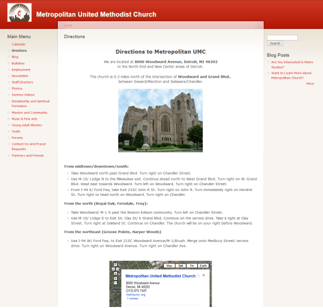
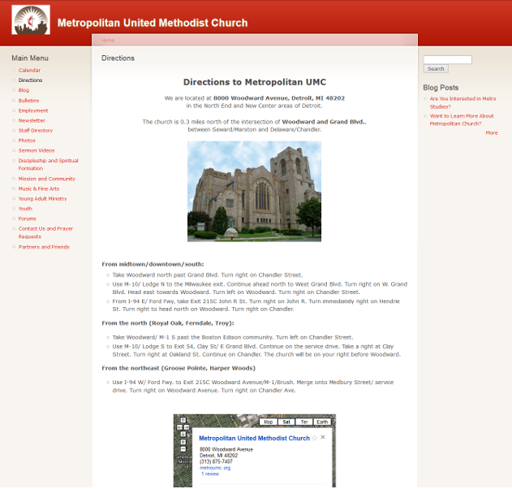

Human. Web Developer. Writer. Poet. Lover of words and code.
What I Do
Web Development
I build websites and web applications. I care about responsive design, making sure sites look good on a variety of devices beyond computers.
Writing and Editing
I love using words to express the beauty in the world. I help people express themselves through words.
Print Design
I create digital publications that can be shared electronically or in hard copy.


 
